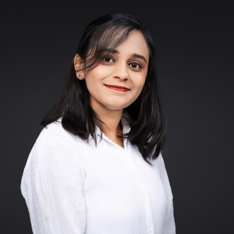

Hi, I am Sarah, nice to meet you!
I am a designer and art director currently living in Stuttgart, Germany. Half German half Italian, I like to bring the best of both worlds into my design which is known for its sophisticated simplicity and thoughtful details. In 2012 I founded my own creative studio to specialize in branding, web and print design and to work with ambitious business owners from all over the globe. I am passionate about helping my clients bring their brands to life and telling their stories visually. My intention is to capture a brand’s personality by developing comprehensive and compelling brand identities and designs.